고정형 사이클을 일정한 속도로 밟으면서 화면의 인지 게임을 함께 푸는 시연용 엑서게임
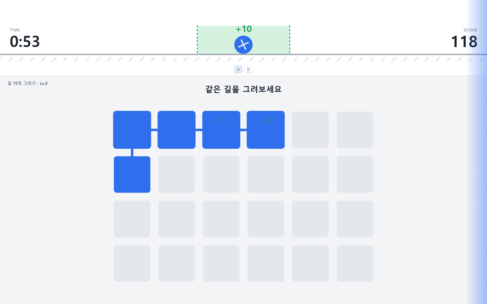
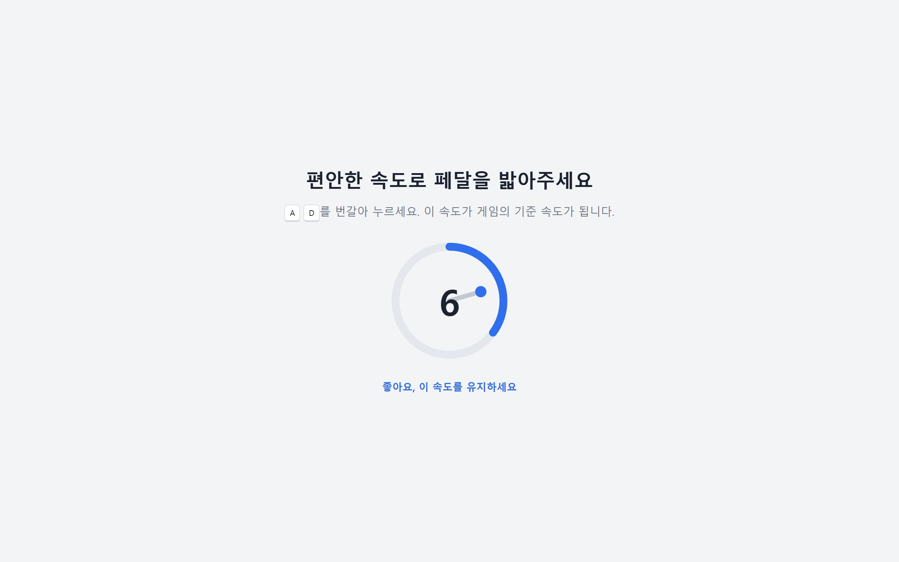
편하게 밟는 속도의 중간값을 기준 RPM으로 저장합니다. 초반 가속 구간은 제외합니다.
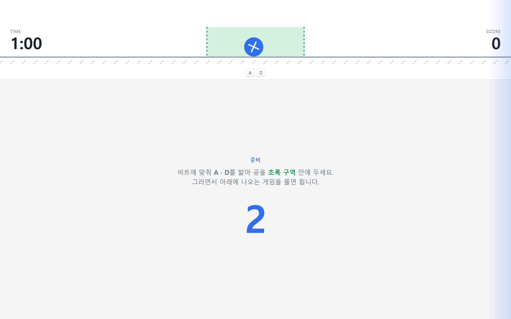
기준 속도에 맞춘 비트와 깜빡임이 시작되어 리듬을 미리 익힙니다.
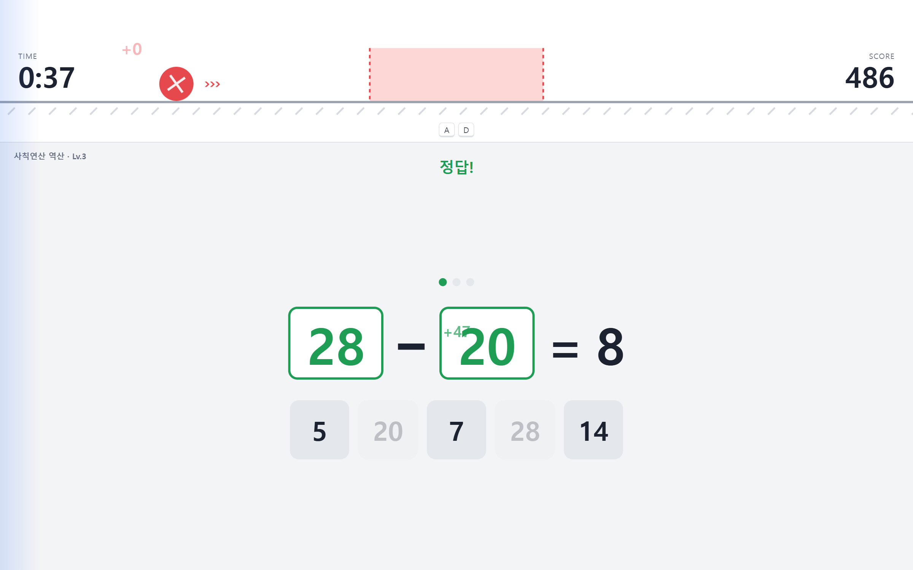
페달링을 유지하며 인지 게임 3종을 번갈아 끊임없이 풉니다.
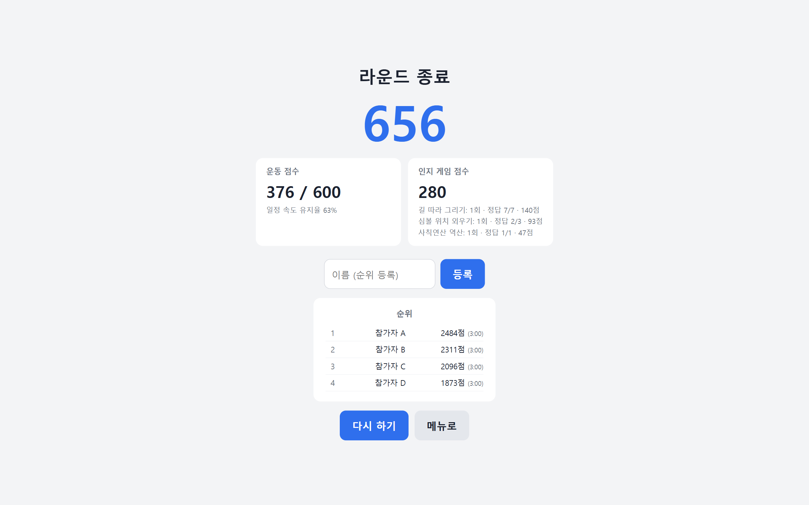
운동 점수와 인지 게임 점수를 나눠 보여주고 순위에 등록합니다.
남은 시간 (분:초) 카운트다운
구르는 공과 허용 구역. RPM 숫자 대신 공의 위치로 속도를 보여주고, 공 위에 +점수가 계속 뜹니다
누적 점수
비트에 맞춘 화면 가장자리 깜빡임 (좌 = A, 우 = D)
인지 게임과 레벨. 한 게임이 끝나면 다음 게임이 바로 이어집니다
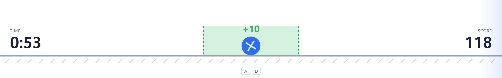
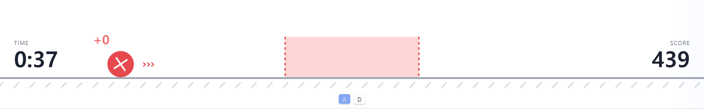
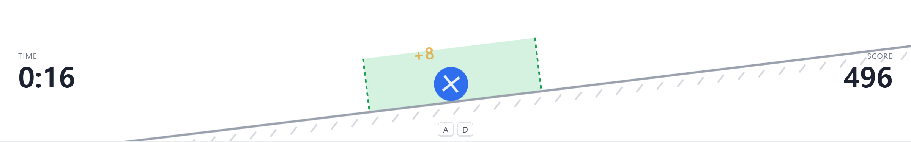
목표보다 느리면 왼쪽, 빠르면 오른쪽으로 움직입니다. 구역 밖에서는 ››› 표시로 방향을 알려줍니다.
40초마다 평지 → 오르막(+12%) → 평지 → 내리막(−12%). 지면 각도와 비트 템포가 12초에 걸쳐 부드럽게 바뀝니다.
기준 속도에 맞춘 비트 음악(킥 = A, 스네어 = D)과 좌우 가장자리 깜빡임. 소음이 커도 시각 신호로 맞출 수 있습니다.
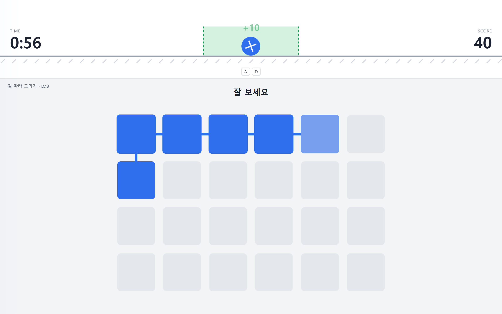
보여준 경로를 기억했다가 같은 순서로 칸을 눌러 길을 완성합니다.
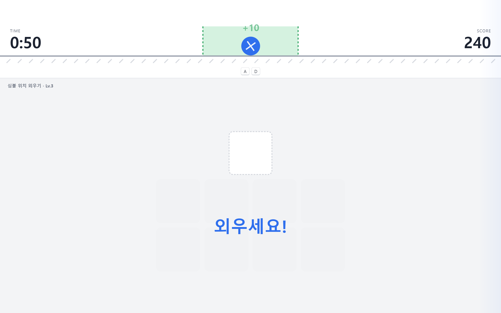
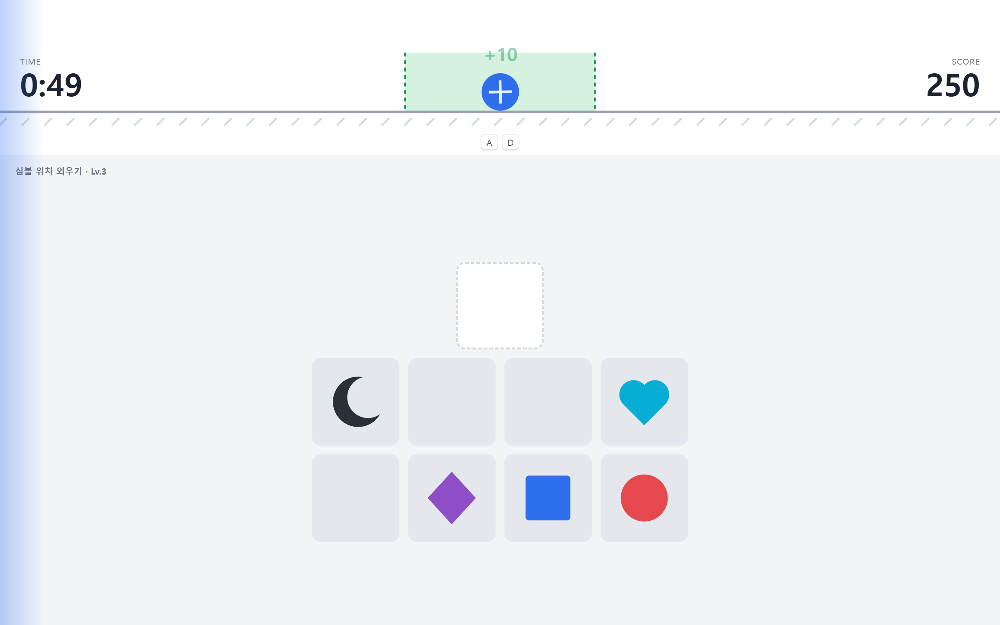
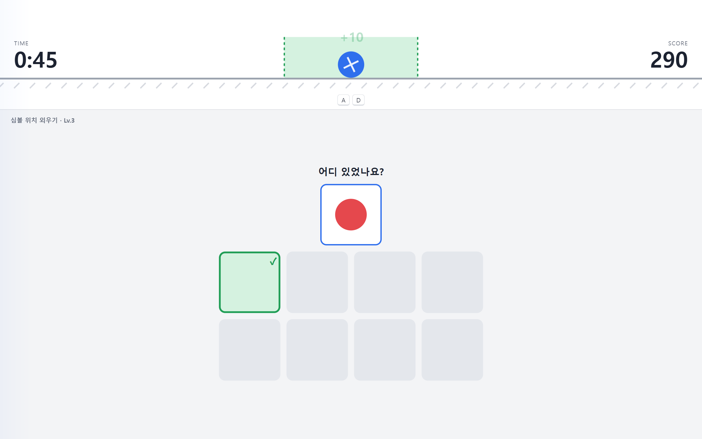
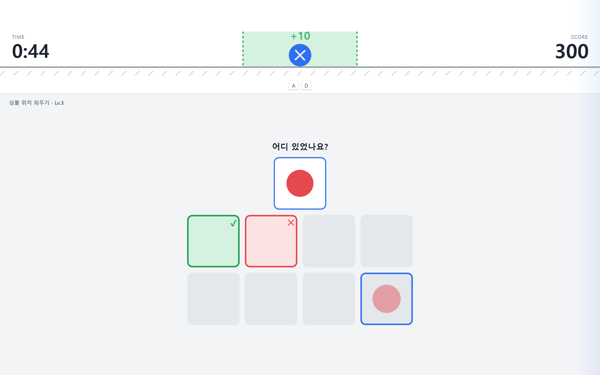
2×4 판에 잠깐 나타난 심볼의 위치를 기억해, 위쪽 칸에 뜬 심볼이 있던 곳을 3번 맞힙니다.
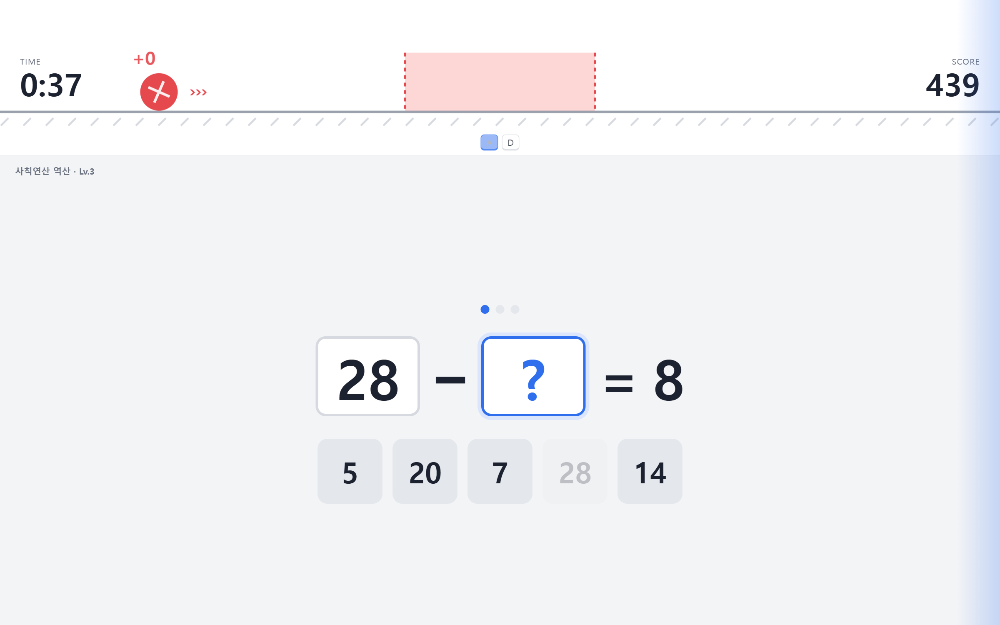
(?) ± (?) = 답 형태의 식에서, 아래 후보 숫자 중 두 개를 골라 식을 완성합니다.
| 순환 | 배율 | 길 따라 그리기 (격자) | 심볼 위치 외우기 (심볼 수) | 사칙연산 역산 (후보 · 숫자 범위) |
|---|---|---|---|---|
| Lv.1 | ×1.0 | 3 × 4 | 3개 | 4개 · 1–9 |
| Lv.2 | ×1.2 | 3 × 5 | 4개 | 5개 · 1–9 |
| Lv.3 | ×1.4 | 4 × 6 | 5개 | 5개 · 2–30 |
| Lv.4 | ×1.6 | 5 × 7 | 6개 | 6개 · 5–60 |
| Lv.5 | ×1.8 | 5 × 8 | 7개 | 7개 · 10–99 |
| Lv.6 | ×2.0 | 6 × 9 | 8개 | 8개 · 10–99 |
순서가 모두에게 같아서 등장 순서 때문에 얻을 수 있는 점수가 달라지지 않습니다. 한 게임을 통과하는 시간의 개인차는 감수합니다. Lv.6 이후는 최고 난이도로 계속 반복합니다.
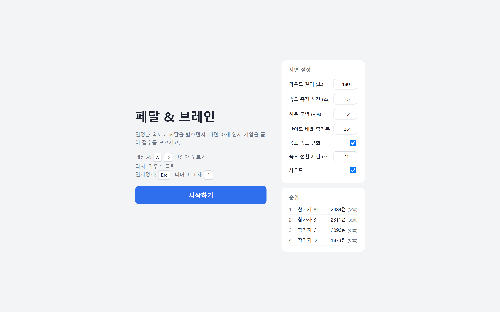